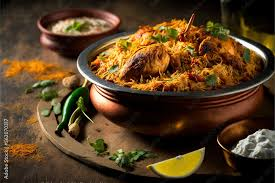
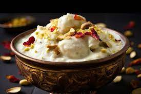
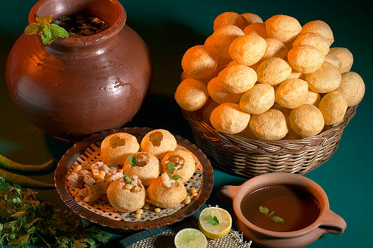

Savor India
"Fill your apetites with burst of flavours and memories that are unforgettable, where every dish tells a story of rich traditions, bold flavors, and culinary mastery. In our second section, immerse yourself in the diverse and delectable realm of Indian food. From the tantalizing spices of Biryani to the comforting embrace of Butter Chicken, experience the culinary magic that has captivated taste buds worldwide. Indulge in the street food symphony of Pav Bhaji and Pani Puri, savoring the unique blend of textures and tastes that define the essence of Indian street eats."
Pav Bhaji is a beloved and flavorful street food dish that hails from the bustling streets of Mumbai, India. It's a delightful and hearty concoction featuring a spiced vegetable mash, known as "bhaji," served with soft, buttered pav (bread rolls).
-Mumbai
This beloved dish is not just a meal; it's a celebration of spices, tradition, and the art of cooking. Biryani comes in various regional variations, each with its unique twist on the recipe, showcasing the diversity of Indian cuisine.
-Hyderabad
Rasmalai, a divine Indian dessert, is a sweet symphony that effortlessly blends the delicacy.The name "Rasmalai" itself is a testament to its essence, where "ras" translates to juice or essence, and "malai" means cream.
-West Bengal
Samosas are versatile and come in various regional variations, showcasing the diverse culinary creativity across different cultures. They can be served with an array of chutneys and sauces, adding tanginess or spiciness to the experience.
-Delhi

Masala Dosa, a South Indian culinary gem, is a crispy and golden rice crepe filled with a flavorful mixture of spiced mashed potatoes. This beloved dish has become a symbol of South Indian cuisine, known for its delightful combination of textures and spices.
-Mysore
Butter Chicken, also known as Murgh Makhani, is a sumptuous and iconic dish that has become a global favorite within the realm of Indian cuisine. This indulgent diss was invented to serve large number of unexpected soldiers.
-Punjab
Pani Puri, also known as Golgappa or Puchka in different regions of India, is a quintessential street food delight that captures the essence of tangy, spicy, and refreshing burst of flavors.
-INDIA
Enjoy one of the tastiest Indian thalis
-Rajasthani Thali


The Great Indian Heritage
"Embark on a captivating journey through the Great Indian Heritage, where time-honored traditions meet the vibrancy of a rich cultural tapestry. From the architectural marvels of ancient temples and majestic forts to the vivid hues of traditional art and culinary wonders, India's heritage is a celebration of diversity. Immerse yourself in a legacy that spans centuries, resonating through the splendid landscapes, historical landmarks, and the warm embrace of a heritage that continues to captivate the world."

With *42* Heritage Sites India has bagged Rank 6 among the World Countries.